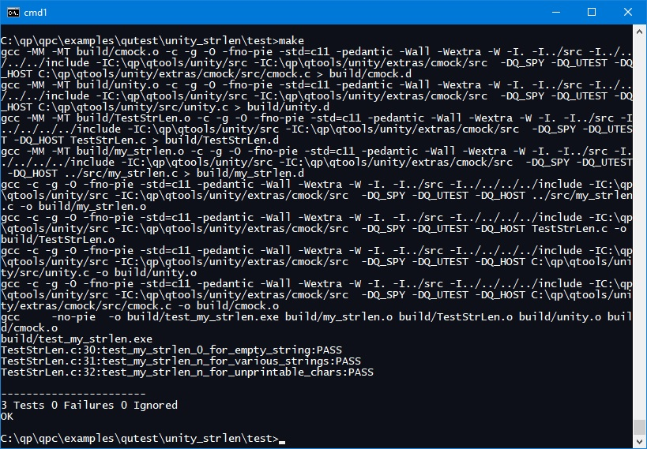
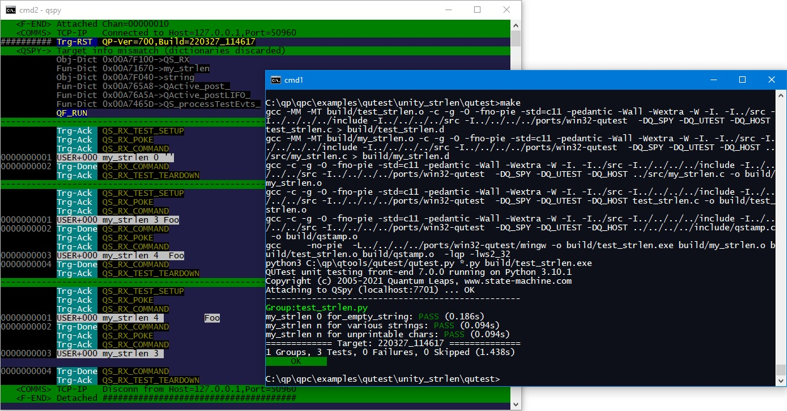

QTools
7.4.0
Collection of Host-Based Tools
This example is based on the simple example_1 that ships with the Unity unit testing framework. This simplest example of Unity has nothing to do with the QP frameworks. The purpose is to illustrate that QUTest™ can be used with generic C code and to compare QUTest™ with Unity.
The CUT in this example is the file my_strlen.c located in the directory C:\qp\qpc\examples\qutest\unity_strlen\src:
The complete code for the basic Unity example is provided in the QP/C framework directory C:\qp\qpc\examples\qutest\unity_strlen\test. To run the basic Unity test (on Windows), open a command-prompt and type:
cd C:\qp\qpc\examples\qutest\unity_strlen\test make
Makefile will also work on Linux and macOS. The only difference from Windows is that you open a terminal window and change the directory to ~/qp/qpc/examples/qutest/unity_strlen/test.This will build the test fixture as a host executable and then it will run it. The screen shot below shows the output produced from the make command.

The complete code for the basic Unity example is provided in the QP/C framework directory C:\qp\qpc\examples\qutest\unity_strlen\qutest. To run the basic test (on Windows), open a command prompt and type:
qspy
This will start the QSPY host utility with the TCP/IP connection to the Target.
Next, open a second command prompt window and type:
cd C:\qp\qpc\examples\qutest\unity_strlen\qutest make
Makefile will also work on Linux and MacOS. The only difference from Windows is that you open a terminal window and change the directory to ~/qp/qpc/examples/qutest/unity_strlen/qutest.This will build the test fixture as a host executable and then it will run the test script (in Python). The screen shot below shows the output produced in these two command-prompt windows.

The job of a test fixture is to exercise the CUT (my_strlen.c in this case) and report the results back to the QSPY host application. Note that a test fixture in QUTest™ is not supposed to perform any checks whether the CUT operates "correctly". Instead, your test fixture should only provide facilities to thoroughly exercise the CUT remotely from the test script(s). A properly written test fixture can typically be used for many tests (implemented in multiple test scripts).
The following listing shows the complete QUTest test fixture for the basic tests (file test_strlen.c in the directory C:\qp\qpc\examples\qutest\unity_strlen\qutest). The explanation section following the listing clarifies the interesting lines of code (lines starting with [xx] labels).
"qpc.h" header file contains the QP/C framework API, which includes the QUTest interface. Typically, you need to include this header file in QUTest test doubles. NOTE: for test fixtures based on the QP/C++ framework, you need to include the
"qpcpp.h"header file.
my_strlen.h in this case. Q_DEFINE_THIS_FILE is needed for "DbC assertions" (they have nothing to do with "test assertions"). Later in this file, a "DbC assertion" is used to guard against failure in the initialization of the QS target-resident component (see step [7]). string is used to control the parameter passed into the CUT. main() function, which has the usual structure of a QP/C application (and in fact in the more advanced tests it can be the same function as used by the actual QP/C application). But here, it contains the bare minimum function calls, as described below. main() function must start with calling QF_init() to initialize the QP framework. main() you need to call QF_run() to run the tests. QS_onTestSetup() allows you to include code that will be run at the beginning of each test. Here this simple CUT does not need any setup, but you still need to provide (an empty) implementation to satisfy the linker. QS_onTestTeardown() allows you to include code that will be run at the end of each test. Here this simple CUT does not need any teardown, but you still need to provide (an empty) implementation to satisfy the linker. QS_onCommand() allows you to remotely execute commands inside the Target. Here is where you execute the CUT and report results back to QSPY. cmdId==0 will be used to call the my_strlen() CUT. NOTE: You can use other cmdIds to call other pieces of CUT or to provide different variants of calling the same CUT, as you see fit. Much of the art of writing test fixtures lies in constructing flexible remote commands that exercise your CUT. QS_BEGIN() macro starts the application-specific trace record that will report results of calling the my_strlen() CUT to the test script. QS_FUN() macro sends the address of the function to the test script. This address will be converted to the name of the function, because the dictionary for this function has been generated in step 8. QS_U16() macro sends a 16-bit unsigned integer (uint16_t) to the test script. Here you output the return value from my_strlen(). QS_STR() macro sends a zero-terminated string to the test script. Here you output the argument passed to my_strlen(). QS_END() macro ends the application-specific trace record. QS_onTestEvt() callback function is not used in this test, but needs to be provided to satisfy the linker. QS_onTestPost() callback function is not used in this test, but needs to be provided to satisfy the linker. A test script contains a group of related tests (a "test group"). The basic job of these tests is to send inputs to the test fixture running in the Target and to compare the QSPY textual output produced with the expectations of the test. The following listing shows the test script (Python) for the Unity basic tests (file test_strlen.py). The explanation section following the listing clarifies the interesting lines of code (lines starting with [xx] labels).
test_strlen.c in the directory qpc\examples\qutest\unity_strlen\qutest."preamble" defines the on-reset code common to all tests in the group:
expect_run() directive consumes the QF-RUN trace record produced after Target reset. OBJ_AP) in the Target. Subsequent commands (such as poke() in the next step) will act on this "current object". "tests" performs various tests:
NOTE: The ability to perform the full Target reset is a unique feature of QUTest. Other unit testing frameworks, including Unity and CppUTest, don't reset the Target. They merely call the test
setup() / tearDown()functions at the beginning and end of the test, respectively. QUTest also callsonReset() / onSetup() / onTeardown(), but obviously the full Target reset is a much better guarantee that the Target starts in exactly the same state.
pack() "pack("<L", 0x5A5A)" into the previously established "Application Current Object". QS_onCommand() callback inside the Target. The argument 0 is the cmdId parameter (see test-fixture[16]). NOTE: The first parameter of command() "command" here is just a number (0), but it is also possible to use a symbolic name for the first parameter. This symbolic name will be looked up in the user dictionary (QS_USR_DICTIONARY()). command(0) command from the previous step. You need to consult the test fixture to determine what you should expect in this case. NOTE: the expected string starts with a number 0000000001, which is the Target Time-Stamp. In QUTest, the "timestamp" simply counts all the QS trace records produced, so that you know that no entries have been lost. In the later tests you will see how you can count the steps automatically with the @timestamp placeholder. Trg-Done QS_RX_COMMAND trace record, which means that all output generated by command() has been generated. As mentioned in the initial description of this example, the directory C:\qp\qpc\examples\qutest\unity_strlen\qutest contains makefiles to build the code and run the tests on the embedded boards (TivaC LaunchPad from Texas Instruments and EFM32 Pearl-Gecko board from Silicon Labs). Both these boards open a virtual COM port on the machine they are attached to via the USB cable. This virtual COM port provides an ideal connection for the QS communication with the QSPY host utility.
For example, to test the EFM32 Pearl-Gecko board (ARM Cortex-M4), open a command prompt (on Windows) and type:
qspy -c COM6
This will start the QSPY host utility with com-port connection to the embedded board. Of course, you need to adjust the serial port number to the actual number of the virtual COM port on your machine.
Next, open a second command prompt window and type:
cd C:\qp\qpc\examples\qutest\unity_strlen\qutest make -f make_efm32
The rest of the test is then exactly the same as with the host executable described above, except that the test fixture runs on the embedded board.
To run the tests on the TivaC LaunchPad (TM4C123 board), you use the make_tm4c123 in the last step.